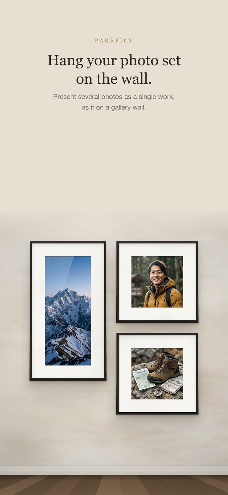
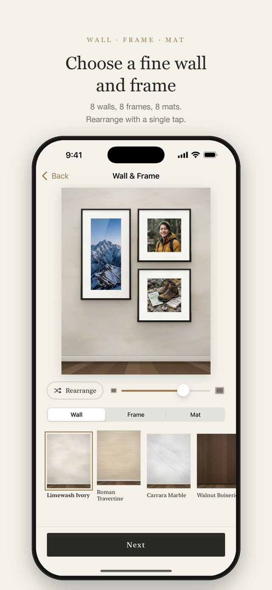
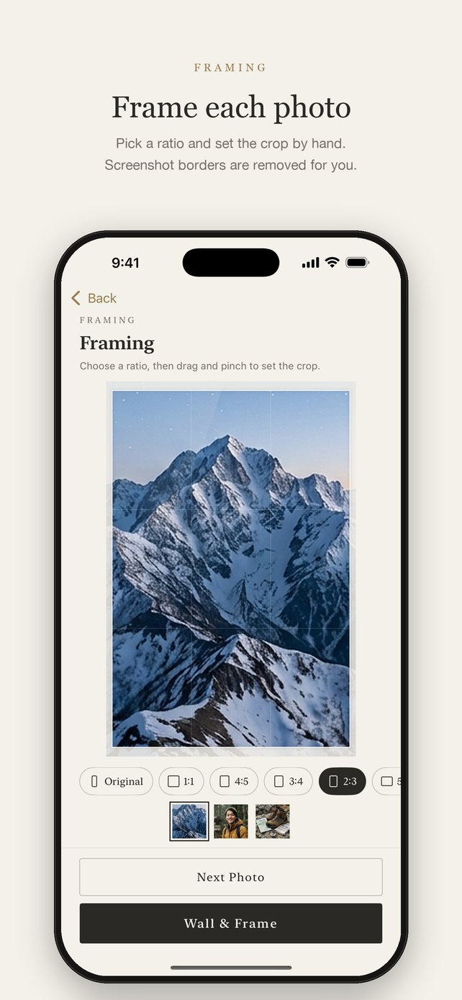
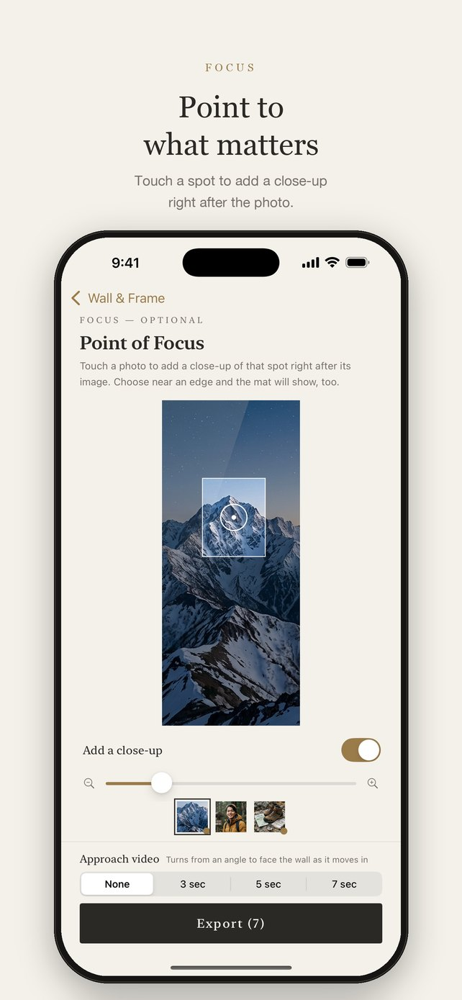
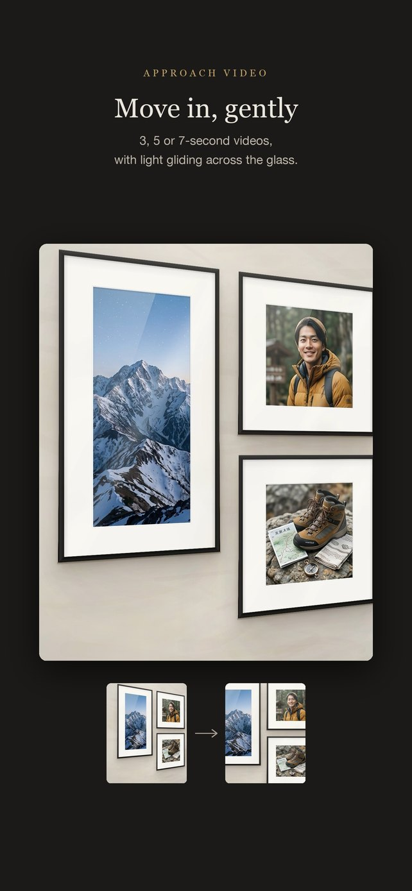
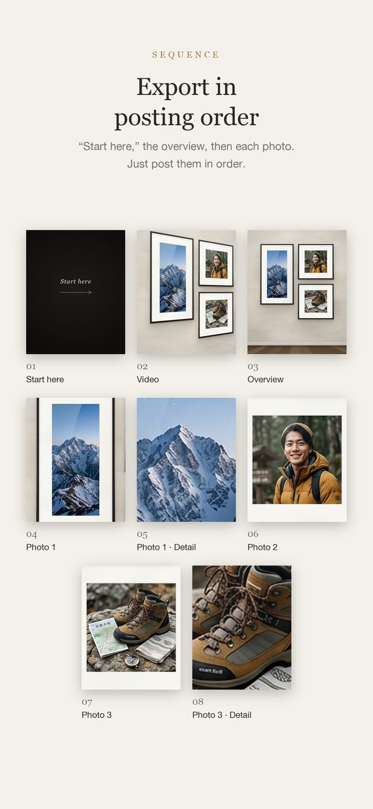

Photo sets, framed on the wall
Hang your photo set
on the wall.
pairPics is an iPhone app for presenting several photos as a single work. Choose a fine wall, a frame and a mat, then export everything in the order you’ll post it.

Three galleries
Three galleries
Beyond the classic wall, there are three places to show your photo set: a forest, a concrete museum and a glass gallery by the sea. The same photos take on a different character in each.
 Move to look around · scroll to walk in
Move to look around · scroll to walk in
Gallery 01 — Forest
The Forest Gallery
Frames float quietly in a sunlit forest. Walk slowly along the path and meet your photos one at a time.
- A real forest with mist and shafts of light, the trees swaying gently in the wind
- Frames float at eye level, placed on either side of the path
- In the video, sunlight through the leaves catches the lens for a brief glint


 Move to look around · scroll to walk in
Move to look around · scroll to walk in
Gallery 02 — Concrete museum
The Concrete Museum
From a raw-concrete entrance, through a tall corridor, into a great hall filled with light. The final photo is big enough to look up at.
- Choose which photos go in the entrance, the corridor, at its end and in the hall
- The hall photo is an unframed acrylic panel up to 16 meters tall
- Spotlights, golden spheres and translucent figures give a sense of scale. Walk-through videos run 15 to 60 seconds


 Move to look around · scroll to walk in
Move to look around · scroll to walk in
Gallery 03 — Glass gallery by the sea
The Glass Gallery by the Sea
Beyond a wall of glass, a calm sea and a small island. Hang your photo set on the glass, and the polished floor reflects the sky and the frames.
- Five times of day: morning, noon, afternoon, dusk and overcast
- Arrangements, frames, mats and titles work just like the wall mode
- In the video, the sea beyond the glass glitters


Screenshots






Features
Designed around the quiet presence of a photo set, rather than any single image.
One to fifteen photos
About 20 arrangements of large and small frames for each count. Shuffle with a tap, and step back anytime.
Framing for each photo
Set the ratio and crop by hand. Black or gray screenshot borders are removed automatically.
Fine walls and frames
Eight walls — limewash, marble, walnut paneling and more — and nine frames, from gilded to a frameless acrylic panel. Choose the frame width and add a spotlight.
Mats that match
The mat adapts to the tones of each photo, or choose from eight mats, including double and linen.
Two film looks
Soft Film and a muted Street Negative. Compare with the original and choose the strength.
Video tours
3 to 30 seconds — from a wide shot to one photo, a gentle glide across others, and the key photo to finish, with light on the glass.
How it works
- Choose how many photos
- Pick your photos and adjust their framing
- Choose a wall, frame and mat, and arrange the frames
- Point to what matters (optional)
- Export, then post to Instagram in numbered order
Privacy
All photos are processed on your device. There’s no account, and no personal information is collected.
Read the privacy policy